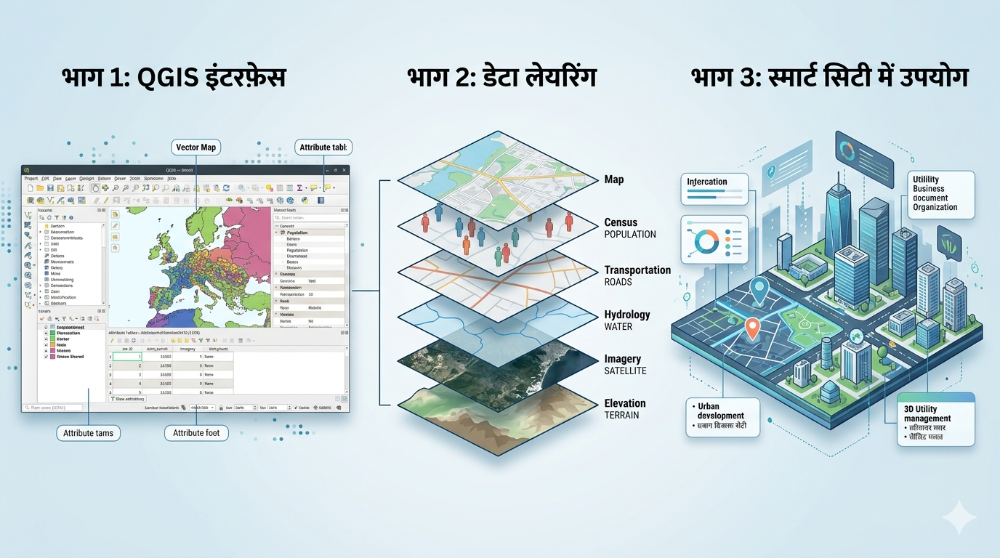

भौगोलिक सूचना प्रणाली (Geographic Information System - GIS) एक ऐसी तकनीक है जो हमें डेटा को भौगोलिक संदर्भ में समझने, विश्लेषण करने और विज़ुअलाइज़ करने की अनुमति देती है। सरल शब्दों में, यह मैप्स और डेटाबेस का एक शक्तिशाली मिश्रण है।
GIS एक कंप्यूटर आधारित सिस्टम है जिसका उपयोग पृथ्वी की सतह पर स्थित स्थानों के डेटा को कैप्चर, स्टोर, चेक और प्रदर्शित करने के लिए किया जाता है।

GIS के महत्वपूर्ण घटक: सॉफ़्टवेयर इंटरफ़ेस, डेटा लेयरिंग तकनीक और स्मार्ट सिटी अनुप्रयोग का एक संयुक्त दृश्य।
GIS की सबसे बड़ी ताकत इसकी "लेयरिंग" (Layering) तकनीक है। इसमें विभिन्न प्रकार की जानकारियों को अलग-अलग परतों में रखा जाता है, जैसे कि सड़क, पानी के स्रोत और जनसंख्या।
GIS केवल भूगोल तक सीमित नहीं है, बल्कि यह निर्णय लेने का एक आधुनिक टूल बन गया है। जैसे-जैसे डिजिटल डेटा बढ़ रहा है, वैसे-वैसे GIS की महत्ता भी बढ़ती जा रही है।